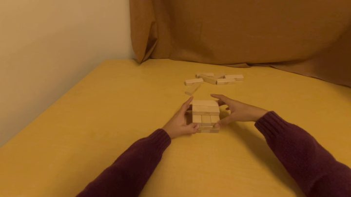

Both sources closed; 1.15M episodes on one caption generation.
source
episodes
sidecars
caption generation
EgoDex
324,167
324,167 · 100%
A.7 complete — 09-11
VITRA
825,935
824,157 · 99.8%
A.7 complete
total
1,150,102
1,148,324
—
what it cost
measured
sidecars 09-03 → 09-07
413,524 → 1,148,324 (2.8×)
VITRA compute
650.3 GPU-h · avg 6.7 GPUs of 32
VITRA sustained rate
1,130 episodes / h / GPU
Closed 2026-09-11 — EgoDex A.7 upgrade, 120,715 episodes (37.2% of EgoDex) over 32 shards, 32/32 COMPLETED, 0 failed. Both sources now carry a single caption generation; no subset filter is needed any more.
1,778 VITRA episodes (0.2%) failed per-episode and were not chased · EgoDex coverage closed 08-30, its caption homogenisation 09-11 · totals here are EgoDex + VITRA only
What the caption upgrade changed
Same instance, three captioners: tags and contradictions became one description.
Instance ids verified identical
Old generations contradict each other
Caption is the encoder’s target

assemble_jenga__188 — anchor frame; the row below describes instance id2
generation
caption written for id2
v02_bbox_legacy
wooden blocks: rectangular, light brown, wood
v3_maskedcrop_qwen3vl
fabric: curved, brown, soft textile
sf_gemma3_pass2_v1
A small, roughly rectangular structure composed of light-brown wooden blocks. The blocks are arranged in a stacked, somewhat haphazard fashion, creating a low, uneven tower. It is being held by two hands.
byte-identical camera_0_instance_id across the three, so the rows describe the same points · one illustrative instance, not a measured rate
Method (1): Where the data is
Flows, sidecars and the subset manifests sit under one root.
root for every … above is /virtual_lab/sjw_alinlab/beomjun/ · sidecar and flow H5 share the filename, so the join is by name · manifests are rebuilt as the corpus changes — re-read them rather than caching
Method (2): Keys to use
Per clip group: points, colours, hand joints, instance ids.
Clip keys are named start:end
Clips: 11 steps at ~10 Hz
Skip instances whose caption is empty
flow H5 — PointWAM
shape
what to do with it
camera_0_scene_flows
(11, N, 3) f32
tracked 3D points in world metres; index i is the same physical point at every t
camera_0_scene_colors
(N, 3) uint8
RGB per point
embodiment_joints
(11,50,3) EgoDex · (11,2,21,3) VITRA
hand joints per timestep; the 12-kp dex view is indices [0,24,5,15,20,10] × 2 hands
camera_0_robot_valid
(11, 12) uint8
EgoDex idle-hand mask — select keypoints by this, never by magnitude
maskcap sidecar — 3D encoder
shape
what to do with it
<clip>/camera_0_instance_id
(N,) uint16
per-point instance id, 0 = unlabeled; N matches scene_flows of the same clip
global_siglip2
(G, 1152) f16
row g−1 = SigLIP2 embedding of instance g's caption — the encoder target
attr global_captions
JSON {id: str}
one caption per instance; empty beyond the per-episode caption budget
attr global_is_agent
JSON {id: bool}
true = human hand or forearm; drop these for an object-only encoder
also per clip: camera_0_extrinsic (4,4) cam→world · camera_0_initial_rgb JPEG · EgoDex projection needs the full-res ARKit K [[736.63,0,960],[0,736.63,540],[0,0,1]] — the file-level intrinsic is tracking-resolution and squashes it; VITRA carries a per-episode intrinsic
Method (3): How to load it
No loader is packaged yet; this is the whole read path.
Instance ids are 1-based
Row g−1 holds id g
import h5py
R = "/virtual_lab/sjw_alinlab/beomjun"
with h5py.File(f"{R}/flows/flow_part2_pw/{stem}.h5") as f:
clip = sorted(f, key=lambda k: int(k.split(":")[0]))[0]
pts = f[clip]["camera_0_scene_flows"][:] # (11,N,3) m
with h5py.File(f"{R}/maskcap_pilot/egodex_part2/{stem}.h5") as g:
iid = g[clip]["camera_0_instance_id"][:] # (N,) 0 = unlabeled
emb = g["global_siglip2"][:] # (G,1152) f16
tgt = emb[iid[iid > 0] - 1] # per-point target
to select
use
a caption generation
no filter — every sidecar is sf_gemma3_pass2_v1
objects only, drop hands
attrs["global_is_agent"] → drop true ids
both handles use the same clip key — that is what makes the join valid · a7_stems.txt and generation_index.tsv are now redundant
Results
PointWAM — scene points and hand skeleton
same contract on both sources; EgoDex 1080p, VITRA 240p
EgoDex hands are ARKit GT, VITRA hands are reconstructed MANO
3D encoder — EgoDex instances
3D encoder — VITRA instances
EgoDex — left scene_flows[0] in its own colours, right embodiment_joints[0] (wrist + 5 fingertips per hand)VITRA — the same contract at 240p; hands reconstructed MANO, metric anchor is the HaWoR hand
metric scale on EgoDex comes from fitting VGGT-Omega depth to the GT hand depths per chunk
Results
PointWAM — scene points and hand skeleton
3D encoder — EgoDex instances
each tile isolates one instance's points over a dimmed anchor frame
tiles sorted by number of points; captions are the A.7 Gemma-3 generation
3D encoder — VITRA instances
paint_clean_brush — one tile per instance, each with the caption whose SigLIP2 row is the targetEgoDex peel_place_sticker — same rendering, different task; agent instances appear alongside objects
VITRA ssv2 100020 · clip 0:11 · same run; captions stop at the CAPK=15 budget, uncaptioned ids are omitted
rendered from the finished corpus, not the 08-25 five-episode demo — that demo used the two-pass masker settings, these use the fused run that produced the sidecars